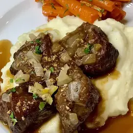

Beef Short Ribs Sauerbraten

The 24-hour marinade in this classic German dish, Sauerbraten, ensures succulent short ribs have that signature
tanginess. Gingersnaps give the sauce a beautiful texture and add a sweet spiciness.
Ingredients
- 3 pounds beef short ribs
- salt and ground black pepper to taste
- 1 tablespoon vegetable oil
- 1 ½ cups water
- ⅔ cup cider vinegar
- ⅔ cup red wine vinegar
- 12 juniper berries
- 9 whole cloves
- 2 bay leaves
- 1 tablespoon salt
- ½ teaspoon freshly ground black pepper
- 1 cup cold water
- 2 tablespoons butter
- 1 large onion, chopped
- 2 stalks celery, chopped
- 1 carrot, chopped
- 3 cloves garlic, minced
- 1 cup water
- 1 cup chicken broth
- 2 tablespoons white sugar, or to taste
- ½ cup crushed gingersnaps
- 1 tablespoon balsamic vinegar
- salt and pepper to taste
Steps
- Season short ribs on both sides with salt and black pepper. Heat oil in a heavy-bottomed skillet over
medium-high heat. Cook short ribs in batches, turning a few times, until browned on all sides, about 10
minutes per batch. Remove short ribs to a large lidded plastic tub while you make the marinade.
- Pour 1 1/2 cups water, cider vinegar, and red wine vinegar into the warm skillet and bring to a simmer. Cook
and stir, scraping any browned bits off the bottom on the pan. Add juniper berries, cloves, and bay leaves,
season with salt and black pepper. Remove from heat and pour in 1 cup cold water. Pour mixture over the ribs
and place in an ice bath until chilled, 30 to 40 minutes. Cover and marinate in the refrigerator for 24
hours.
- Melt butter in a large,heavy pot or Dutch oven over medium heat. Cook and stir onion, celery, and carrot in
the melted butter until the vegetables are softened, about 10 minutes. Add garlic and cook for 1 minute.
Place marinated short ribs over the top of the onion mixture. Pour in remaining marinade from the plastic
tub and stir in 1 cup water, chicken broth, and sugar.
- Bring to a simmer over medium-high heat. Reduce heat and simmer on low, covered, until meat is fork-tender,
3 to 4 hours. Remove meat to a platter. Discard juniper berries, cloves, and bay leaves. Sprinkle cooked
onion mixture over the top of the meat, reserving excess cooking liquid in the pan.
- Place pot with remaining cooking liquid over medium-high heat. Grind gingersnaps in a food processor until
fine and to the liquid in the pan. Stir in balsamic vinegar and boil until reduced and thickened, skimming
fat, about 20 minutes. Season with salt to taste. Strain gravy through a fine mesh sieve, spoon over the
beef, and serve.